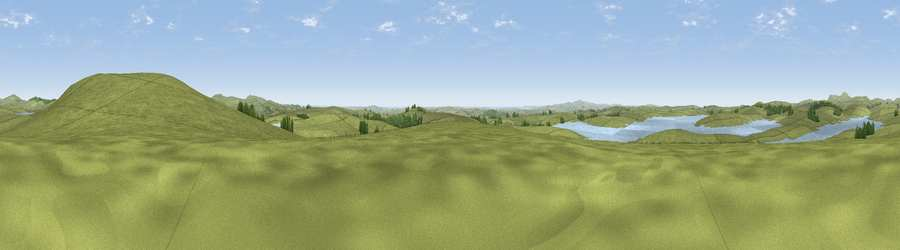

Viewpoint near St Neot
#13330 in England · top 26% of its area beats it · near St NeotThe view, rendered

A 360° render of this exact spot computed from the terrain model, tree cover and land cover — summer colours, afternoon light, calibrated against photographs of famous viewpoints. Real trees, hedges and buildings will differ in detail.
The panorama
Grey silhouette: terrain skyline in each direction (720 bearings, Earth curvature and refraction included). Dashed green: skyline with trees (+15 m) and buildings (+8 m) as obstacles. Blue strip: how far the ground is visible on each bearing.
Where the view opens
Wedge length = distance to the farthest visible ground on that bearing (vegetation-aware). Rings at 10, 25 and 50 km.
What fills the view
85% grassland · 11% water · 3% woodland · 2% cropland
Angular shares of the visible panorama (visual magnitude), not map area. Landscape diversity 0.24 (0–1 Shannon).
Key numbers
More beautiful places nearby
The staircase of upgrades: each row has a higher view potential than everything closer. Driving times are estimates from straight-line distance, calibrated against real road routing — check an actual route before setting out.
| Place | Direction | Drive | Score |
|---|---|---|---|
| Viewpoint near St Neot | ENE · 1 km | ~2 min | 72.3 |
| Berry Down | SSE · 3 km | ~8 min | 73.5 |
| Viewpoint near Henwood | E · 7 km | ~14 min | 77.3 |
| Caradon Hill | E · 8 km | ~17 min | 78.5 |
| Bin Down | SSE · 17 km | ~30 min | 80.2 |
| Viewpoint near Lesnewth | NNW · 19 km | ~33 min | 82.6 |
| Viewpoint near Boscastle | NNW · 20 km | ~34 min | 85.2 |
| Pencarrow Head | S · 22 km | ~36 min | 86.0 |
50.52219, -4.55513 · source: screening · position refined by local search. Computed location — check access rights before visiting.